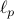

|
* equal contribution authors; otherwise, the order is based on contribution unless authors are listed in alphabetical order (noted explicitly).
Papers
The Distillation Game in LLMs: Adaptive Attacks & Efficient Defenses
Y. Allouah*, M. Haghifam*, R. Shokri, S. Koyejo
Submitted, 2026
Code
Adaptive Generate-Rank-Verify: Inference-Time Search with Costly Verification
S. Dughmi, M. Haghifam, Y.H. Kalayci (authors listed in alphabetic order)
Under Submission, 2026
Code
Black-Box Data Reconstruction via List Decoding: The Necessity of List Memorization for Learning
G. Brown, M. Haghifam, E. Linder, R. Livni, G. Thampakkul, N. Weinberger (authors listed in alphabetic order)
Forthcoming, 2026
The Sample Complexity of Membership Inference and Privacy Auditing
M. Haghifam, A. Smith, J. Ullman (authors listed in alphabetic order)
IEEE Symposium on Foundations of Computer Science (FOCS), 2026.
On Traceability in  Stochastic Convex Optimization
S. Voitovych*, M. Haghifam*, I. Attias, G. K. Dziugaite, R. Livni, D. M. Roy
Advances in Neural Information Processing Systems (NeurIPS), 2025 (Spotlight, <3% of submissions)
Private Geometric Median
M. Haghifam, T. Steinke, J. Ullman (authors listed in alphabetic order)
Advances in Neural Information Processing Systems (NeurIPS), 2024
Talk
Code
Information Complexity of Stochastic Convex Optimization: Applications to Generalization and Memorization
I. Attias, G. K. Dziugaite, M. Haghifam, R. Livni, D. M. Roy (authors listed in alphabetic order)
International Conference on Machine Learning (ICML), 2024 (Oral, Best Paper Award: Top 10 of 10,000 submissions)
Talk
Faster Differentially Private Convex Optimization via Second-Order Methods
A. Ganesh, M. Haghifam, T. Steinke, A. Thakurta (authors listed in alphabetic order)
Advances in Neural Information Processing Systems (NeurIPS), 2023
Code
Why Is Public Pretraining Necessary for Private Model Training?
A. Ganesh, M. Haghifam, M. Nasr, S. Oh, T. Steinke, O. Thakkar, A. Thakurta, L. Wang (authors listed in alphabetic order)
International Conference on Machine Learning (ICML), 2023
Limitations of Information-Theoretic Generalization Bounds for Gradient Descent Methods in Stochastic Convex Optimization
M. Haghifam*, B. Rodriguez-Galvez*, R. Thobaben, M. Skoglund, D. M. Roy, G. K. Dziugaite
International Conference on Algorithmic Learning Theory (ALT), 2023
Privacy-Preserving and Approximately Truthful Local Electricity Markets: A Differentially Private VCG Mechanism
M. Hoseinpour, M. Hoseinpour, M. Haghifam, M. R. Haghifam
IEEE Transactions on Smart Grid, 2023
Understanding Generalization via Leave-One-Out Conditional Mutual Information
M. Haghifam, S. Moran, D. M. Roy, G. K. Dziugaite
International Symposium on Information Theory (ISIT), 2022
Towards a Unified Information–Theoretic Framework for Generalization
M. Haghifam, G. K. Dziugaite, S. Moran, D. M. Roy
Advances in Neural Information Processing Systems (NeurIPS), 2021 (Spotlight, <3% of submissions)
Talk
On Streaming Codes With Unequal Error Protection
M. Haghifam*, M. N. Krishnan*, A. Khisti, X. Zhu, W. Dan, J. Apostolopoulos
IEEE Journal on Selected Areas in Information Theory, 2021
Information-Theoretic Generalization Bounds for Stochastic Gradient Descent
G. Neu, G. K. Dziugaite*, M. Haghifam*, D. M. Roy*
Annual Conference on Learning Theory (COLT), 2021
Sequential Classification with Empirically Observed Statistics
M. Haghifam, V. Y. F. Tan, A. Khisti
IEEE Transactions on Information Theory, 2021
Sharpened Generalization Bounds based on Conditional Mutual Information and an Application to Noisy, Iterative Algorithms
M. Haghifam, J. Negrea, A. Khisti, D. M. Roy, G. K. Dziugaite
Advances in Neural Information Processing Systems (NeurIPS), 2020
Talk
Code
Information-Theoretic Generalization Bounds for SGLD via Data-Dependent Estimates
J. Negrea*, M. Haghifam*, G. K. Dziugaite, A. Khisti, D. M. Roy
Advances in Neural Information Processing Systems (NeurIPS), 2019
Code
Joint Sum Rate And Error Probability Optimization: Finite Blocklength Analysis
M. Haghifam, M. Robat Mili, B. Makki, M. Nasiri-Kenari, T. Svensson
IEEE Wireless Communications Letters, 2017
Workshop Papers
Differential Privacy with MedMNIST
L. Zhang, S. Allin, M. Haghifam, M. Pawliuk, R. Engineer, F. Shkurti
15th Symposium on Educational Advances in Artificial Intelligence (teaching paper based on the design of course material on DP)
Sequential Classification with Empirically Observed Statistics
M. Haghifam, V. Y. F. Tan, and A. Khisti
IEEE Information Theory Workshop, 2019
Streaming Codes with Unequal Error Protection against Burst Losses
M. Haghifam, A. Badr, A. Khisti, X. Zhu, W. Dan, J. Apostolopoulos
The 29th Biennial Symposium on Communications, 2018
On joint information and energy transfer in relay networks with an imperfect power amplifier
M. Haghifam, B. Makki, M. Nasiri-Kenari, T. Svensson
IEEE International Symposium on Personal, Indoor, and Mobile Radio Communications (PIMRC), 2016
State estimation in electric distribution networks in presence of distributed generation using the PMUs
M. Haghifam, M. R. Haghifam, B. Safari Chabook
CIRED 2012
|